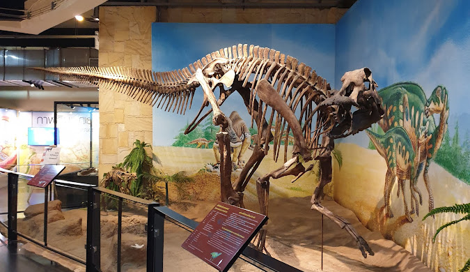
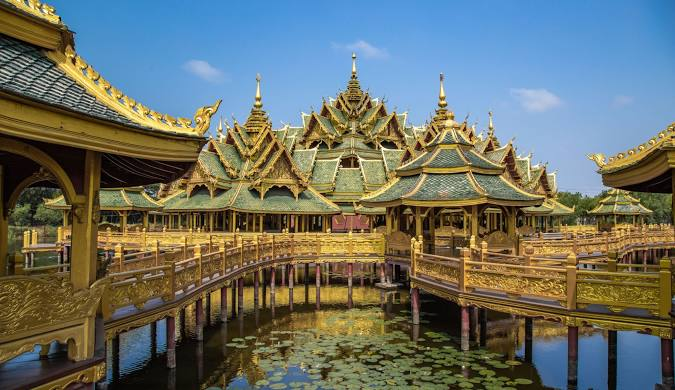

กาฬสินธุ์
สำรวจความงามทางธรรมชาติและวัฒนธรรมในกาฬสินธุ์
พิพิธภัณฑ์สิรินธรเป็นพิพิธภัณฑ์ไดโนเสาร์ที่ใหญ่ที่สุดในประเทศไทย ตั้งอยู่ใกล้ภูเวียง ที่นี่จัดแสดงโครงกระดูกไดโนเสาร์ที่ถูกขุดค้นพบในพื้นที่ของจังหวัดกาฬสินธุ์ รวมถึงการจัดแสดงนิทรรศการที่ให้ความรู้เกี่ยวกับไดโนเสาร์และโลกในยุคดึกดำบรรพ์ นอกจากการจัดแสดงในตัวอาคารแล้ว ยังมีส่วนจัดแสดงกลางแจ้งที่ให้ผู้เข้าชมได้เห็นแหล่งขุดค้นไดโนเสาร์ของจริงอีกด้วย
สมุทรปราการ
ค้นพบประวัติศาสตร์และทิวทัศน์อันงดงามของสมุทรปราการ
เมืองโบราณเป็นพิพิธภัณฑ์กลางแจ้งที่มีขนาดใหญ่ที่สุดในโลก ที่นี่เป็นแหล่งรวบรวมสถาปัตยกรรมและวัฒนธรรมไทยจากทั่วประเทศ โดยมีการจำลองสถานที่สำคัญและโบราณสถานจากทุกภาคของประเทศไทย ไม่ว่าจะเป็นวัด พระราชวัง หรืออาคารทางประวัติศาสตร์ ผู้เข้าชมสามารถสัมผัสประสบการณ์การเดินทางผ่านประวัติศาสตร์และวัฒนธรรมไทยได้อย่างครบถ้วนในที่เดียว